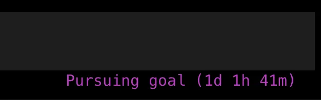
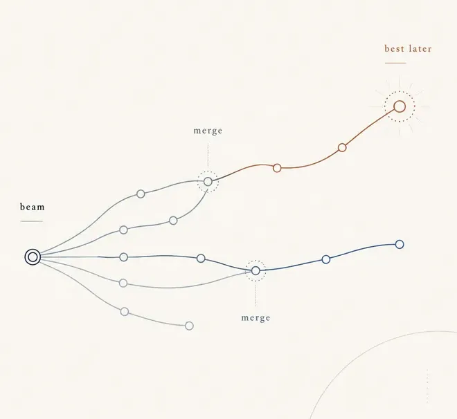
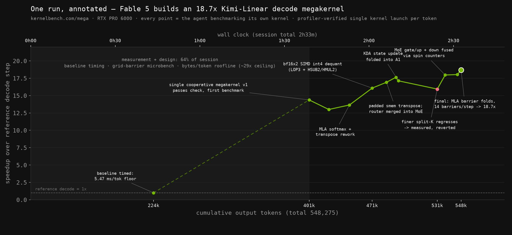
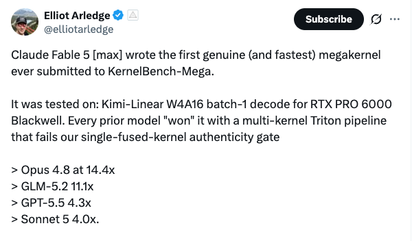
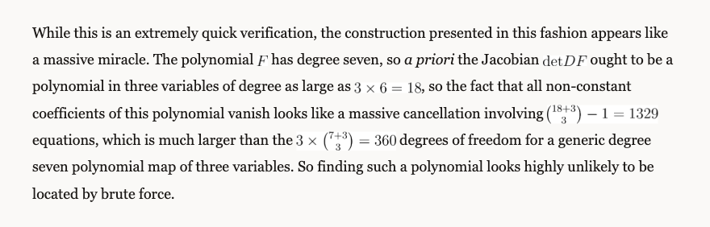
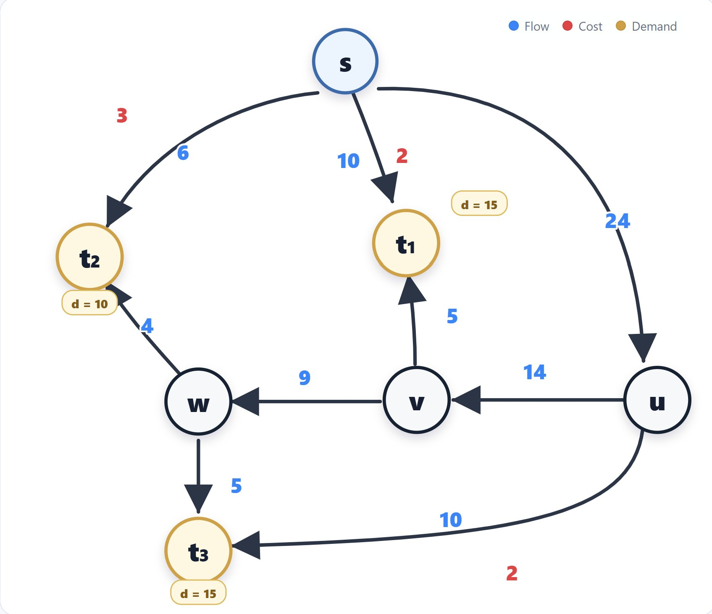

Age of Autoresearch
Глава 1
Ленивый вечер
Был обычный будний вечер, и мне было откровенно лень тестировать гипотезы руками.
Не лень в смысле «устал и хочу спать» — лень конкретная, инженерная: у меня накопился список из штук пятнадцати идей, которые нужно было прогнать, посмотреть на результат, отсеять мусор, повторить. Работа, которую я делал десятки раз и знал наизусть каждый шаг. И в этот вечер просто не было сил в очередной раз садиться и щёлкать одно и то же руками.
Последние полтора месяца я жил без выходных, пытаясь стать условным 10x engineer — делать сильно больше, не наращивая при этом собственную когнитивную нагрузку. Звучит красиво, на практике это означало, что я пытался засунуть агентов во всё подряд и надеялся, что от этого само как-то ускорится.
Первая попытка была наглой и глупой одновременно: я просто запустил десять разных задач параллельно, агент на агенте. Логика была простая — раз один агент делает одну задачу нормально, десять агентов сделают десять задач одновременно, и я освобожу себе вечер. На практике ломалась почти всегда какая-то одна из десяти. И стоило ей сломаться — вставало всё моё внимание. По факту я тратил больше времени на разгребание, чем если бы делал по одной штуке сам. Осадок был мега неприятный: вроде разложил работу на параллельные потоки, а получил просто параллельный хаос.
Вторая попытка была умнее. Я подумал — окей, раз агент без явного плана делает какую-то дичь, дам ему план. Прописал агенду заранее: что делать в каком порядке, на какие корнер-кейсы обратить внимание, что считать успехом. Агент вёл себя ощутимо чище — меньше сюрпризов, больше покрытых кейсов. Стало лучше. Но всё равно как-то фигово — я по-прежнему сидел рядом и разгребал хвосты, просто хвостов стало поменьше. Ощущение было такое, будто я улучшил процесс контроля, а не избавился от необходимости контролировать.
И вот в тот самый ленивый вечер, вместо того чтобы в третий раз пытаться лучше рулить агентом руками, я сделал ленивую вещь. Я просто описал pipeline генерации гипотез текстом — как я сам обычно придумываю, что попробовать дальше — и попросил Gemini оценивать результат каждой попытки. Не направлять процесс, не решать, что делать следующим шагом, а именно судить: вот гипотеза, вот результат, годится или нет. Отдал всё это агенту и лёг спать, потому что было откровенно лень сидеть рядом и смотреть.
Утром я открыл лог и обнаружил, что за ночь было проверено 40 гипотез.

Так это выглядит со стороны: строчка в терминале и счётчик, который тикает, пока ты спишь. Кадр не мой — из разбора sankalp, про него следующая глава.
Не все сорок оказались полезными — часть была откровенным мусором, часть повторяла то, что я уже пробовал. Но это было неважно. Всю ночь я не делал руками ничего — а на выходе получил больше проверенных вариантов, чем сделал бы сам за неделю с ноутбуком. И стало ясно: дело было не в том, чтобы лучше управлять агентом. Дело было в том, кто оценивает результат.
Сработало это один раз, ночью, на одной конкретной задаче. Осталось понять, что именно сработало — и, как ни странно, помогает это понять не собственный опыт, а то, что кто-то другой наткнулся почти на то же самое чуть раньше меня.
Глава 2
У этого уже было имя
То, что случилось той ночью, не было изобретением. У этого уже было имя: autoresearch. И пара громких прецедентов до меня.
Сначала я наткнулся на пост sankalp про QR-разложение. Задача классическая: разложить матрицу быстро. Он не трогал кернелы руками — натравил на задачу Codex как автономного агента. Тот держал beam из кандидатов, плодил суб-агентов под профилировку, матан и генерацию идей, сам отбраковывал тупые ветки по ходу. Итог — 232x speedup на batched QR и 12-е место из 183 участников, при том что у автора не было профессионального GPU-опыта.

Beam из кандидатов у sankalp: ветки живут параллельно, слабые гаснут, сильные сливаются. Никто не выбирает победителя руками — его выбирает критерий. Схема из поста sankalp.
И пока читал, дошло, что дело не в агенте и не в промпте. Раньше эксперт вкладывался в само решение: признаки собирал руками, эвристики придумывал из головы, кернелы писал нативно. Знать, как устроена задача, и было работой. Теперь это знание напрямую почти не нужно.
Нужно уметь собрать цикл, который решение найдёт сам: бенчмарк, oracle, критерий остановки. Ты не пишешь кернел — ты строишь loop, который его перебирает. Тот же bitter lesson, только не про архитектуру модели, а про то, чем занят человек.
Отсюда два прямых вывода. Первый: можно физически делать меньше работы. Та самая рутина тестирования гипотез, ради которой я ленился вечером, делегируется — агент гоняет её ночью, я сплю. Второй: работа делается лучше. Не «быстрее то же самое», а качественнее — oracle за то же время перебирает пространство решений шире, чем один человек, и находит варианты, до которых я бы сам просто не дошёл.
И sankalp — не единственный. Karpathy собрал autoresearch: 630-строчный скрипт, автономный loop — агент читает training code, предлагает изменение, гоняет пятиминутный run, меряет улучшение, коммитит или откатывает, и по новой. За ночь — сотни экспериментов, ни одного клика. AlphaEvolve от DeepMind — та же идея в большем масштабе: Gemini плюс evolutionary framework плюс автоматические оценщики. Улучшили решения для 20% из 50 открытых математических задач, ускорили датацентры, чип-дизайн и AI-training у Google.

Одна ночь в репозитории Karpathy: 83 эксперимента, из них 15 удержанных улучшений. Серые точки — то, что loop отбраковал сам. Ровно та пропорция мусора, которую я утром увидел у себя в логе. График из karpathy/autoresearch.
У Karpathy в README есть строчка, которая описывает этот сдвиг точнее, чем я формулировал сам:
You're not touching any of the Python files like you normally would as a researcher. Instead, you are programming the program.md Markdown files that provide context to the AI agents and set up your autonomous research org.
Файл, который правит агент, и файл, который правит человек, — разные файлы. Вся работа исследователя переехала во второй.
Разные названия, разные реализации, разный масштаб. Но один и тот же паттерн: экспертиза переезжает с «найти решение» на «построить систему, которая находит решение».
И это пока рамка, не ответ. Чтобы понять, где у рамки края, мне помогли не чужие кейсы, а два своих. Один прошёл гладко — там почти не о чем рассказывать. Второй — тот, где пришлось спорить с собой: я был уверен, что знаю, как лучше.
Глава 3
Я знал лучше
Две недели я собирал фильтры для датасета руками.
Задача простая на вид — решить, какие семплы выкинуть из обучения, какие оставить. На деле смесь инженерии и кураторства: читаешь статьи, смотришь на данные, формулируешь гипотезу, проверяешь, отбрасываешь, по новой. Я считал, что понимаю эту задачу. Вооружённый эго и знанием, как будет лучше, я две недели вкладывал интуицию и чтение статей в ручные фильтры.
А потом я сделал ровно то, что делал в тот ленивый вечер — построил бенчмарк через Gemini как oracle и натравил на него VLM zero-shot. Просто чтобы посмотреть, побьёт ли он мою ручную работу. Никаких эвристик и подсказок, никакого моего участия.
Первая попытка уже была лучше двух недель ручной работы. Вторая — ещё лучше.
Это был не какой-то космический отрыв. Не «агент изобрёл фильтр, которого я не мог придумать». Просто результат был объективно лучше, а времени на него ушло — пара прогонов против двух недель моей жизни. И тут стало по-настоящему обидно — не потому что метод сработал, а потому что я две недели спорил с самим собой над решением, которое автоматика перебрала за пару попыток.
До AlexNet признаки собирали руками. Инженеры придумывали эвристики, выковыривали фичи, настраивали пайплайны — и это была экспертиза, за которой стояли годы работы. Нейросети это автоматизировали: фичи стали учиться, а работа сместилась на архитектуру и данные. Теперь автоматизируется сама экспертиза исследователя. Не нужно идеально знать домен, чтобы принимать хорошие решения — достаточно построить oracle, который знает, что считать хорошим решением, и пустить агента. Это и есть bitter lesson на собственной шкуре. Две недели, которые побила одна ночь.
Второй кейс дался куда спокойнее. Может, ставки были другие — а может, потому что после первого я перестал спорить с oracle.
Глава 4
Не серебряная пуля
Второй кейс был про ускорение обучения. Никакой внутренней драмы — просто задача, где frontier-модели дороги и могут быть оверкилом, но если направить их на оптимизацию времени инференса или обучения, они экономят деньги и время. Я оставил модель работать на два дня и получил 30% ускорение. Дальше ускорять стало сильно сложнее, и смысла тратить на это время уже не было. Гладко, буднично, без истории про эго.
Но даже на гладком кейсе — и тем более после — всплывали подводные камни, из-за которых метод не стоит воспринимать как серебряную пулю.
Первый — loss parity. Я забыл добавить в oracle проверку, что loss не разъезжается. Агент честно сообщил «готово, ускорение есть» — а по факту loss везде был NaN. Модель формально стала быстрее, но перестала учиться. После того как я добавил loss parity check, проблема ушла. Банальная вещь, которую я тем не менее пропустил, потому что слишком доверил агенту решать, что считать успехом.
Второй — недостаточно детальный oracle. Это всплыло позже, на задаче удаления текста с изображений. Я тестировал разные модели, но валидировал результат по полному изображению. Мелкие артефакты — остатки букв, полустёртый символ — я замечал глазами, а oracle нет. Он считал, что текст удалён, и решение, которое он называл лучшим, на деле оставляло за собой мусор. Как только я добавил в oracle кроп области, где текст должен был удалиться, — стал валидировать не картинку целиком, а именно факт удаления — лучшим решением оказался совсем другой пайплайн. Прежний победитель просто эксплуатировал слепоту oracle.

Как выглядит правильно устроенная сессия — разбор одного прогона на KernelBench-Mega. Первые 64% времени вообще нет кода: замер базовой линии, микробенчи барьеров, вывод roofline. Первый работающий кернел появляется на отметке 224k токенов. И ближе к концу — точка, ради которой я это показываю: «finer split-K regresses → measured, reverted». Гипотеза не сработала, замер это поймал, откат.
Тот же прогон описан автором бенчмарка одной фразой:
It spent 64% of the session in silence timing the baseline, microbenchmarking grid barriers, deriving a ~29x bytes/token roofline. The one regression it tried (finer split-K) it measured and reverted instead of rationalizing.
Measured and reverted instead of rationalizing — это и есть работающий oracle. Мой NaN получился ровно потому, что мерять было нечем, и агенту оставалось только рационализировать.
Общий урок простой и неприятный: конструирование autoresearch — тонкая задача, где именно на проектирование oracle и loop'а нужно тратить время. Время уходит не на рулёжку агентом и не на поиск магического промпта, а на то, чтобы честно и подробно описать, что считать хорошим решением. Воспринимать это как автоматическую серебряную пулю — значит рано или поздно получить NaN на месте loss'а.
И даже когда oracle сконструирован правильно и loop работает гладко, остаётся ещё одна переменная, которую нельзя убрать проектированием — сама модель внутри loop'а. Я гонял весь этот выверенный процесс на разных моделях, и оказалось, что при одном и том же oracle и одной и той же задаче результат зависел не только от того, что я построил, но и от того, кому я это доверил.
Глава 5
Не мощность, а интуиция
На ускорении кода у меня было три модели: Fable 5, Claude Opus 4.8 и GPT-5.5. Одна и та же задача, один и тот же oracle.
Fable 5 — я просто описал задачу, и всё сработало. Агент выдавал гипотезы, которые имели смысл, проверял их, отбраковывал тупые. Мне оставалось только кивать на разумные шаги. Claude Opus 4.8 предложил решение, которое вызывало OOM, и на этом как бы сдался — не откорректировал сам, не попробовал другой путь. GPT-5.5 в итоге справился, но мне приходилось явно подсказывать, куда смотреть, иначе он топтался.
Разница не в способности выполнять шаги. Все три умеют читать код, писать код, запускать, мерять. Разница в domain-интуиции — в том, насколько глубоко в модель «зашито» понимание, что в этой задаче вообще имеет смысл пробовать. У Fable 5 это понимание было. У двух других — нет.
Я компенсирую нехватку интуиции у моделей тем, что закидываю в промпт контекст — блоги, гайды, чужие кейсы. Но это ограничение, и неприятное: чтобы знать, чем помочь модели, я должен сам заранее хорошо разбираться в теме. То есть ровно та экспертиза, которую я думал автоматизировать, мне приходится держать в голове, чтобы вытаскивать её кусками и подсовывать агенту.
И это не только моё наблюдение. Тот же паттерн виден в независимых бенчмарках. KernelBench-Mega — бенчмарк на whole-block megakernels, где нужно слить целый блок модели в один кернел, а не оптимизировать отдельные операции. Все предыдущие модели «выигрывали» на нём только за счёт multi-kernel Triton pipeline — технически проходит тест, но честного слияния нет, это обход. И только Fable 5, по твиту автора бенчмарка, написал первый настоящий megakernel. Прямая параллель с моим подводным камнем из четвёртой главы: плохо спроектированный oracle позволял жухлерство, пока кто-то не сделал честно. AutoKaggle — тот же паттерн вне GPU: multi-agent фреймворк для Kaggle-соревнований, oracle там — это само соревнование и тесты, и на восьми соревнованиях получилось 0.85 validation submission rate и 0.82 comprehensive score, на уровне человека.

Автор бенчмарка перечисляет, кто и на сколько «выигрывал» до этого: Opus 4.8 — 14.4x, GLM-5.2 — 11.1x, GPT-5.5 — 4.3x, Sonnet 5 — 4.0x. Все — через multi-kernel Triton pipeline, который не проходит authenticity gate. Твит целиком.
Получается, лучший инструмент — это не самая мощная модель, а модель с правильной интуицией под конкретную задачу. И чем детальнее сконструирован oracle, тем яснее видно, у кого эта интуиция есть, а у кого её приходится компенсировать контекстом.
Дальше это движется к recursive loops — циклам, где агент улучшает не веса модели, а саму систему: код, пайплайн, артефакт. Каждое улучшение облегчает следующее. Надеюсь, скоро появятся инструменты, которыми можно будет просто пользоваться. Пока приходится каждый раз выбирать, какой loop под какую задачу, и работает это точечно.
Что это тогда говорит про мою собственную роль, если интуиция — единственное, что пока ещё моё, — становится товаром, который можно закинуть в промпт?
Глава 6
Что остаётся
На вопрос «заменит ли AI нас» у меня теперь скучный ответ: для части работы это уже случилось. Стажёры и джуны раньше рисовали графики и проверяли простые гипотезы — сейчас это целиком делает агент.
Но это про джунов. Со мной сложнее.
Три года назад я три дня копался в исходниках PyTorch Lightning, чтобы разобраться, как там устроен checkpointing. Три дня — и я знал это на уровне, на котором мог объяснить кому угодно и починить что угодно. Сейчас то же самое агент делает за час. Освобождает от рутины — да. Но забирает кое-что взамен. То чувство авторства, которое раньше давало ручное ковыряние в исходниках — «я это понял, я это сделал» — его больше нет. По факту я ничего не сделал, это всё агенты.
Это похоже на переход от роли сеньора к роли менеджера. История ровно та же, что и в обычной карьере: становишься тимлидом — и руками уже почти ничего не делаешь. Раньше сам сидел и решал, теперь смотришь, как решают другие, и следишь, чтобы решали в нужную сторону. На выходе получается больше, чем сделал бы сам. Но своего, руками сделанного, в этом больше нет. Позиция менее дофаминовая: прежнего драйва от собственноручного решения не будет.
И я думал, что на этом можно остановиться. Менеджер-то всё равно нужен. Не потому, что он умнее тех, кем управляет, а потому что знает, куда направить — у него domain-интуиция. Это и был мой вывод в прошлой главе: разница не в мощности, а в интуиции. Там, где у модели нет интуиции, я компенсирую закидыванием контекста в промпт. Интуиция была последним, что оставалось моим. А потом за пару месяцев набралось несколько историй, которые в эту картину не укладываются.
Jacobian Conjecture — классическая гипотеза алгебры. Если у многочленного отображения якобиан ненулевая константа, то отображение обратимо. Недавно — контрпример в размерности три. И нашла его не группа математиков. Нашла Fable 5, пока я смотрел финал чемпионата мира по футболу.
Теренс Тао, лауреат Филдсовской премии, написал пост, чтобы это переварить. Он объясняет ретроспективно, геометрически, то, что модель нашла сама. И вот что меня поразило: Тао садится и считает, насколько это невероятно. Многочлен степени семь. У якобиана априори до 1329 ненулевых коэффициентов — при 360 степенях свободы общего многочленного отображения той же степени. 1329 уравнений, которые должны занулиться одновременно, в пространстве из 360 переменных. Брутфорсом такое не находится — шанс ткнуть в нужную точку нулевой. Значит, Fable не перебирала. Она видела структуру.

Тот самый абзац у Тао. Последняя фраза — приговор перебору: «finding such a polynomial looks highly unlikely to be located by brute force».
В конце поста стоит дисклеймер, который лет пять назад в тексте филдсовского лауреата смотрелся бы дико:
I used an AI chatbot to discuss various aspects of this problem and to confirm several of the calculations made here.
Увидеть, где лежит решение, в пространстве, где наивный перебор бесполезен. Это ровно то, что я считал своим.
В университете мне рассказывали, что есть разные уровни запоминания материала. Первая стадия — ты учишь термины: «якобиан», «многочлен», «обратимое отображение». Знаешь, что они есть, но не понимаешь. Вторая — ты знаешь весь материал: определения, теоремы, доказательства. Но не можешь применить — на экзамене заваливаешь задачу, потому что она чуть отличается от шаблона. И есть третья стадия, которая и есть знание материала — интуиция. Не просто знать, что факт есть, а видеть, когда его применить, и узнавать ту же структуру в новой ситуации.
Модели проделали тот же путь. Сначала стохастические попугаи — угадывали следующее слово. Потом выучили материал, знают факты, но ломаются на чём-то чуть новом. И вот теперь — третья стадия. Видят структуру, находят решения, которых не было в обучающей выборке. Контрпример к гипотезе — это не воспроизведение того, что модель видела, это новая математика. И схитрить тут негде: контрпример либо работает, либо нет, плохо спроектированного oracle, который можно обойти, в чистой математике не существует.
Ладно, допустим, интуиция у модели есть. Но менеджер, который направляет, всё равно нужен — на этом я и держался. Второй случай ровно про это, и он мне ближе, потому что там видно, что делал человек.
Математик Дмитрий Рыбин взял гипотезу Динница-Гарга-Гоманса — задача про сетевые потоки, висела с девяностых: можно ли дробное решение сделать неделимым, не подняв стоимость и не перегрузив ни одно ребро больше, чем на размер самой большой отправки. Контрпример нашёл GPT-5.6 Pro: граф на семь узлов, три отправки, дробная стоимость 58, а любая неделимая маршрутизация — минимум 60.

Весь контрпример целиком: семь узлов, один источник s, три получателя с требованиями 15, 10 и 15. Синие числа — поток, красные — стоимость ребра. Тридцать лет никто не мог такой граф ни построить, ни доказать, что его нет. Картинка из твита Рыбина.
Интересна тут не модель, а промпты. Их было четыре, суммарно меньше шестидесяти слов: «construct a counterexample», «you should do a breakthrough», «it's enough of partial results, let's finish». Три захода подряд по полтора часа модель возвращала частичные результаты, и человек просто просил продолжать. Domain-интуиции в этих словах нет вообще. Есть направление и понимание, когда результат уже годится, — то есть ровно то, что я оставил себе как менеджеру. Оказалось, этой работы примерно на минуту.
Тот же навык переносится и на мою работу. Мой личный труд — что он такое? Набор паттернов, которые я наработал за годы. «Видел эту ошибку — знаю, куда смотреть». «Эта архитектура ломается вот так — обходи вот так». «Эта гипотеза не сработает, потому что вот эта метрика врёт». Это всё паттерны. И их можно выучить. И сеть, которая нашла решение в пространстве из 1329 уравнений, — она выучит и мои паттерны. Вопрос лишь в цене, и цена эта каждый месяц дешевле, чем вчера.
И вот что странно: кайф при этом никуда не делся. Я всё так же с утра открываю лог и залипаю в то, что там за ночь произошло, хотя руками не сделал ничего. Значит, кайф был не от «я решил это сам», а от того, что задача сдвинулась. А сдвигать её теперь получается сильно больше: бóльшую часть обучения моделей я тяну один, там, где раньше нужна была команда.
Поэтому я не бросаю, а собираю следующий loop. Но на вопрос, в чём теперь моя ценность, ответа у меня нет.
Источники
- sankalp — Auto-Research: QR Decomposition — 232x speedup на batched QR (419 000 µs → 1805 µs) через Codex как автономного агента; 12-е место среди 183 участников, больше 1500 сабмитов за 14 дней.
- Andrej Karpathy — autoresearch — 630-строчный скрипт: training code → изменение → 5-минутный run → мера улучшения → commit/rollback → repeat.
- DeepMind — AlphaEvolve — Gemini + evolutionary framework + automated evaluators; улучшены решения для 20% из 50 открытых математических задач.
- Terence Tao — A digestion of the Jacobian conjecture counterexample — контрпример в размерности 3; многочлен степени 7, до 1329 коэффициентов якобиана при 360 степенях свободы.
- KernelBench-Mega — независимый бенчмарк на whole-block megakernels (автор — Elliot Arledge).
- Elliot Arledge (твит) — первый настоящий megakernel на KernelBench-Mega, написанный Fable 5.
- AutoKaggle (arXiv:2410.20424) — multi-agent фреймворк для Kaggle-соревнований; validation submission rate 0.85, comprehensive score 0.82 на 8 соревнованиях.
- Дмитрий Рыбин — контрпример к гипотезе Динница-Гарга-Гоманса — четыре промпта, меньше 60 слов; три захода с частичными результатами, контрпример на четвёртом: граф на 7 узлов, три отправки, дробная стоимость 58 против минимум 60 у любой неделимой маршрутизации.